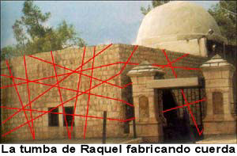
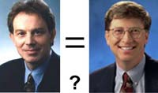

Una visión desde dentro del Islam
Un lector (que permanecerá anónimo para evitar posibles represalias) nos escribe:
Primero, permítale contarle sobre mí; fui capacitado como ingeniero, ahora trabajo en un instituto científico de investigación como investigador ambiental. Estoy frustrado por el hecho de que uso la ciencia como herramienta para monitorear el ambiente en una tierra donde la mayoría de la población elige tener fe en la “anti-razón”. Actualmente asisto a una conferencia de las Naciones Unidas en Europa, de modo que mis recursos son limitados en este momento. Le prometo, sin embargo, que le enviaré por email imágenes de los temas que discutiré, tan pronto vuelva a casa.
Soy un admirador de su trabajo desde hace mucho tiempo. Vi el siguiente artículo e inmediatamente pensé en cuán similar es esta situación a lo que ocurre en mi país, Kuwait:
http://www.nytimes.com/2005/02/01/science/01evo.html?ex=1108011600&en=9943266aee31283e&ei=5070
Cuando era estudiante de secundaria hace casi 25 años, nos enseñaron evolución en clase de biología, y el creacionismo en la clase de religión (que es obligatoria tanto en nuestro sistema educativo público como en el privado).
Actualmente, y en su mayhor parte debido a los movimientos islámicos fundamentalistas parecidos a los que controlan a los terroristas extremistas, nuestro gobierno está temiendo enseñar evolución. No sólo eso, sino que hay un movimiento que desalienta la inclusión de las referencias a mitos y creencias antiguos en los programas escolares, ¡como si enseñar a los niños la Ilíada los fuera a hacer creyentes en Zeus y Marte!
Al mismo tiempo, nuestra sociedad sufre de un diluvio de creencias en lo paranormal. Muchas mujeres recurren a la “brujería”. Los avisos en los diarios (y hasta hace poco los anuncios comerciales de televisión) predican las virtudes de las propiedades místicas de la miel, como se menciona en el Corán; los libros de astrología se venden mejor que los libros de divulgación científica, y muchos creen que hasta intentar refutar tales creencias va en contra del Islam.
Noto en sus escritos (así como en los de Martin Gardner) cómo señalan que los fanáticos religiosos intentan pintar el mundo de acuerdo con su propia perspectiva, a pesar de la lógica y el conocimiento adecuado. Para ellos, la verdad sencillamente no es el objetivo. Pero esta situación en una sociedad que ha acordado separar el estado de la religión es el cielo comparado con aquellos de nosotros que todavía vivimos bajo el mando de los predicatores. Cuando obtuvo la independencia, Kuwait se destacaba como país porque adoptó rápidamente una constitución e implementó un proceso democrático por medio de un parlamento elegido; no era totalmente una democracia, pero se esperaba que se produjeran reformas en el corto plazo. Este no fue el caso, ya que el gobierno siguió interfiriendo con este proceso, y hace dos décadas descubrió el arma perfecta para debilitar el proceso democrático asociándose con las facciones religiosas.
Para estas facciones, la evolución realmente es una mala palabra, y algunos fanáticos llegan a extremos tales para desacreditar a la evolución y a Darwin que recurren a tácticas similares a las que adoptan los seguidores de “Los Protocolos de los Sabios de Sión”, porque para los fanáticos todo es una conspiración contra el Islam. Para ellos, la meta de los evolucionistas es incapacitar a la religión, y predicar la ciencia como la verdad última. Si esto le suena conocido, al menos en los EE.UU. los evolucionistas no son motejados de “apóstatas”, ¡y los ultrafundamentalistas no exigen su sangre!
Hoy, no es raro ver carteles en las calles y los periódicos anunciando “sanación religiosa/coránica”, probablemente utilizando métodos parecidos a los que ha mencionado en su libro sobre el tema, pero con menos teatro. Los fundamentalistas islámicos, como mencioné, predican el valor de usar la miel en sanarlo todo… ¡lo que se le ocurra! Hay un párrafo en el Corán que afirma: “la miel tiene un poder sanador”, y los islámicos, como siempre, afirman que esta debe ser la verdad última. Hace unos meses, una publicidad en el canal de televisión oficial del estado promocionaba una marca de miel para sanar los síntomas pulmonares. El comercial fue retirado del aire luego de que surgieron informes de que a esa marca se le había adicionado esteroides y cortisona.

Randi comenta: el Corán muestra la ignorancia de La Deidad (del nombre que sea) citando pseudociencias y mitos, mencionando repetidamente la habilidad sobrenatural de las abejas al producir miel dulce “de los jugos amargos de las plantas”. La Biblia, el Libro de Mormón, el Veda de los hindúes, el Corán, el Talmud, la Torá y los escritos antiguos de China, Egipto, Grecia y Roma se extasían en su descripción de los supuestos poderes curativos de la miel. Dice el Corán en el Capítulo XVI, “La abeja”: “Surge de sus vientres un líquido de color variado, en el que hay medicina para los hombres”. El profeta mismo dice: “La miel es un remedio para todas las enfermedades”. Nuestro corresponsal continúa:
La astrología siempre es popular, de hecho en nuestro instituto es costumbre que algunas personas verifiquen sus horóscopos tan pronto como encienden sus computadoras, ¡probablemente antes de revisar su email!
Otro aspecto que se está volviendo popular es la creencia en la brujería y la “magia negra” ¡por parte de personas que se supone están bien instruidas! Debo admitir que hablo de este tema con mucha ira porque una colega me acusó de “echarle maldiciones”. ¡Llegó al extremo de ir a la policía acusándome de intentar asesinarla! A propósito: ¡esto sucede en el principal instituto de investigación científica del país! (Ya que este tema todavía sigue su curso, prefiero no regodearme en detalles ahora, pero si lo desea le informaré más tarde los detalles).
Los periódicos anuncian conferencias sobre la brujería y cómo evitarla. El recorte adjunto es un ejemplo, mi traducción rápida:
El centro de sanación para consultas psicológicas, en cooperación con el comité Shurooq de la caritativa organización se complace en invitarlo a la conferencia “El ojo negro y la brujería: entre la religión, la medicina y la ley”. Los exponentes incluyen a: Sheikh Abdul Aziz Al-Owayed, predicador islámico; el doctor Adel Al-Zayed, un especialista en psicología; y el Sr. Khalid al-Abdul Jaleel, el prominente abogado. La conferencia tendrá lugar en [dirección y fecha]. Se reserva un lugar especial para las mujeres de la audiencia. ¡HECHOS SORPRENDENTES! ¡HISTORIAS EXTRAÑAS!
Y este recorte proviene de un periódico destacado, ¡no de uno sensacionalista o de un boletín!
Espero que me perdone por mi largo mensaje, y me disculpo. Como dije, me inquieta mucho el estado actual al que hemos sucumbido en nuestro país. ¡Sólo espero que podamos mantener encendidas las antorchas de la salud mental lo bastante como para que la mentalidad del público recobre el sentido de la razón y se comporte como ciudadanos de la era moderna!
Este hombre dice que es miembro del Comité para la Investigación Científica de las Afirmaciones Paranormales (CSICOP) y ha leído el libro “La ciencia y lo paranormal”. ¡Lo raro es que no se mencionan mis libros!
Aceptan la grafología en la Universidad Rand

El lector “Quinton” de Sudáfrica hace poco tuvo un cambio de palabras con alguien de allí que aceptó algunas de las afirmaciones de la grafología. Lo comparte con nosotros:
Le envío adjunta una copia de la correspondencia entre yo mismo y un conferenciante superior de psicología en la universidad Rand Afrikaans, una de nuestras (de Sudáfrica) estimadas universidades (donde obtuve mi doctorado en Ciencias Sociales, así que no estoy siendo sarcástico). La correspondencia tuvo lugar luego de que respondí a su pregunta sobre qué pensaba yo sobre la grafología…
Gracias por su respuesta. La razón por la que pregunté es que me considero bastante escéptico, pero uno de mente abierta; como sea, un estudiante mío para un posgrado acaba de completar una disertación que demostró inequívocamente la utilidad de la grafología como herramienta de evaluación para identificar a niñas en edad escolar que sufrieron abuso sexual. Fue un estudio doblemente ciego que se controló estrechamente, y la grafología pudo separar la escritura manuscrita de los casos de abuso confirmados de los casos en los que no hubo abuso con un nivel de exactitud cercano al 78%; esto es mucho más alto que otros instrumentos psicométricos o proyectivos diseñados para el mismo propósito. Lo que quiero decir es que a veces es difícil separar la pseudociencia de la ciencia pero algunas cosas improbables parecen funcionar bien… a veces basadas en los sistemas de creencias del usuario.
Quinton respondió:
La grafología anida firme y cómodamente entre la homeopatía, la quiropráctica, el polígrafo, la rabdomancia y otras “certificadas” pseudociencias. Presume de ser una ciencia, pero deriva de antiguos sistemas de creencias (herramientas de adivinación, para ser más precisos) y no tiene valor real. Es un “arte” subjetivo, intuitivo, que se basa en la interpretación del practicante de la información que se le presenta. Al igual que otras pseudociencias mencionadas más arriba, incluso la gente educada e inteligente es atrapada por la convincente tecnocháchara que se usa para promocionarla, pero pruebas y análisis cuidadosos revelan pronto las fallas. Comprar y memorizar el “Manual de Vuelo para el Modelo 6 del Enterprise” en una convención de Star Trek no lo convierte a uno en piloto ni a la nave en algo real.
Quinton está bastante acertado en su punto de vista sobre la grafología. No sólo siempre hemos ofrecido el premio de la JREF a los grafólogos, sino que los hemos evaluado… con los resultados esperados. Desde este intercambio, Quinton ha sugerido a esta persona que visite la página de la JREF y nuestros comentarios sobre la grafología. No hay evidencia de que nos hayan consultado… Vea más adelante otro artículo sobre la grafología.
Más cháchara sobre la Cábala
El lector Mario Tamboer tiene más que decir sobre el disparate estúpido (¡pero lucrativo!) sobre la Cuerda Roja y el Centro Cabalístico que mencionamos la samana pasada. Se refiere a un programa de TV que vio en la BBC referido a ello:
He podido encontrarlo en Internet. Como supe que dijo en su conferencia, ¡Google lo sabe todo! Aquí está el enlace: http://news.bbc.co.uk/1/hi/world/4158287.stm
Vea la afirmación que uno de ellos hizo sobre el Holocausto. Si esta es la opinión de su organización, entonces esta gente está de verdad enferma. Por coincidencia, este programa se emitió al mismo tiempo que al príncipe Harry lo pescaron usando un uniforme nazi en una rebuscada fiesta de disfraces. El asunto del príncipe Harry puede haber opacado un tanto la indignación por los comentarios del Centro.
También apareció esto en el programa:

Una entrevista con un rabino, que estaba bastante descontento con el señor Berg. Una de las razones fue que él tenía fuertes sospechas de que el señor Berg había vendido un pergamino de la Torá que había recibido a uno de sus seguidores, como si hubiera sido hecho especialmente para él. El rabino mostró sus pergaminos y explicó que normalmente eran un regalo de los miembros de la congregación y que la tapa de los pergaminos era importante, ya que indicaba quién lo otorgaba y a quién pertenecía. Aparentemente, el señor Berg simplemente cambió o retiró la tapa y lo vendió. El rabino estaba indignado de que alguien pudiera hacer tal cosa para ganar algún dinero.
Una visita a la tumba de Raquel, de donde viene la Cuerda Roja (o así lo afirman). Eso no fue fácil, ya que está en territorio palestino, con acceso controlado por el ejército israelí. Cuando llegaron, les ofrecieron gratis un trozo de cuerda roja y el rabino de la tumba quedó totalmente sorprendido de que alguien pidiera dinero por ello. Aparentemente nunca vio a nadie del Centro Cabalístico enrollando carretes de cuerda siete veces alrededor de la tumba (siete es el número mágico), así que ¿de dónde vienen sus cuerdas?
Un informe del periodista de incógnito que fue a buscar ayuda, diciendo que antes había sufrido de cáncer y había sido curado por la medicina científica. Su comentario fue la gema de todo el programa. Estaba muy, muy enojado que mientras que el hospital que había salvado su vida tuviera problemas para recaudar fondos para comprar nuevos equipos para salvar vidas, se desperdiciara dinero en estupideces inútiles como el Agua Cabalística.
Con el apoyo de las estrellas como Madonna, Britney y David Beckham, el señor Berg y su Centro Cabalístico parecen atravesar una racha favorable. No tengo dudas de que este culto está arruinando vidas. Gracias por llamar la atención hacia él. Los verdaderos creyentes normalmente están más allá de cualquier rescate, pero puede haber algunos indecisos a los que se pueda llegar a tiempo.
La gente de la burbuja está entre nosotros
El lector “Rob” ha descubierto una subcultura…
Supongo que podría decirse que he sido un escéptico toda mi vida. Tengo que reir ante las tonterías y creencias que parece ser legión en nuestro mundo “tecnológico”. Su sitio web es lectura fascinante y una luz contra la oscuridad… Aunque puede no tener un impacto directo en la clase de insensata conducta de fraude paranormal que se ve en los practicantes del arte mágico de hacer desaparecer el dinero (salvo el premio de usted), el siguiente artículo es un estudio fascinante que puede explicar parte del autoengaño: http://www.apa.org/journals/psp/psp7761121.html. Primero lo vi mencionado en la primera plana de USA Today, y luego hace poco me lo volví a encontrar. ¿No es gracioso que uno pueda llegar a la conclusión de que la mayor parte del porcentaje de la gente que es más probable que diga que es un “médium” competente es la menos inclinada a dar una evaluación realista de sus capacidades, incluso si sus capacidades realmente existieran? Hmmm. las implicaciones son interesantes, si no es que apabullantes.
Me dicen que el enlace a la Gente de la Burbuja no funciona. Intente acceder a http://content.apa.org/journals/psp/77/6/1121 para obtener un resumen.
Un comentario al margen, ya desde hace algún tiempo he venido postulando la existencia de gente burbuja en la población general. He sabido que existían pero no he podido probarlo. Ahora, sin embargo, puedo observarlos realmente en la vida cotidiana, basado en efectos indirectos, conductas y otros resultados. Hay gente en torno a nosotros que crea y habita un mundo burbuja especial e invisible dentro del cual la observación y reconocimiento de la realidad está parcial o totalmente suspendido.
El efecto es como una burbuja o aura que rodea al (los) individuo(s) afectado(s). Toda la información objetiva se altera cuando cruza la pared de la burbuja (digamos que son “re-hechos”), badados en el conjunto interno de reglas definidas aleatoriamente por el(los) habitante(s) de la burbuja. “No puede ser así, sería doloroso o inconveniente o caro o…”, por lo tanto no es. “Quiero que sea cierto”, por lo tanto lo es. Voilà. La burbuja surge a la existencia. Trabajo en un dispositivo especial electrónico de medición para detectar la presencia de una burbuja, no importa cuán pequeña sea.
La cuestión es que la burbuja misma es invisible; la gente burbuja al principio parece normal. La única forma en que un observador externo objetivo puede detectar la presencia de una burbuja es indirectamente, verificando la perturbación en la corriente de hechos antes y después de que encuentra la burbuja en torno a la persona-burbuja. Mientras mejor sea el habitante de la burbuja alterando o desviando los hechos objetivos, más libre flota la burbuja de las sujeciones del mundo real. Es una forma de antigravedad informativa, y hay una notable cantidad de usos para este efecto si a uno le interesa.
Mientras más lejos de la realidad flota la burbuja, es más grande el peligro consiguiente para sus habitantes. Lamentablemente, también hay un peligro para los transeúntes imprudentes. Todavía estoy estudiando los efectos colaterales, pero parecen ser reales. Mire más abajo.
Verificar las reglas aparentes de la gente burbuja (¿cabezas huecas?) no es tarea fácil. Las reglas parecen cambiar cuando de las enfrenta o se las observa directamente, como un mal remedo del principio de incertidumbre de Heisemberg aplicado a la sociología. Me encuentro, sin embargo, con que hay varias leyes fundamentales (vagas) implícitas en la creación y sostenimiento de una burbuja antirrealidad en completo funcionamiento:
[Ley Cerésima] Somos libres de determinar lo que es verdadero basándonos en nuestras creencias, sentimientos y necesidades personales.
El tamaño de la burbuja es directamente proporcional al número de habitantes y a la fuerza de sus creencias.
La flotabilidad de una burbuja aumenta con su tamaño: mientras mayor sea la burbuja, más se aleja de la realidad.
El dinero y la publicidad actúan para aumentar el tamaño de la burbuja y refuerzan la resistencia de las paredes de la burbuja.
Los efectos pequeños de la burbuja se acumulan con el tiempo [el efecto reclutamiento].
Los objetos filosos (los hechos, la verdad, etc.) pueden desestabilizar (reventar) la burbuja y son evitados instintivamente a toda costa.
Mi teoría y las leyes o reglas fundamentales requieren más elaboración y refinamiento, pero prometo seguir trabajando en ellas; hasta ahora ha sido el trabajo de una vida. La teoría preliminar tiene algún uso práctico inmediato. Por ejemplo, explica el problema que la mayoría de la gente- burbuja identificable tiene con usted y la JREF en general: ambos son objetos muy filosos.
Algún día, tendré la GTUMB (Gran Teoría Unificada de los Métodos Burbujiles) terminada para su publicación. Hasta entonces, siga con los pinchazos, digo, con la buena obra.
P.D.: Espero que mi intento de humor no se malentienda. Ya tengo a varias personas que viven conmigo en mi burbuja teórica. Nos parece un modelo mental muy útil para explicar ciertas conductas en torno a nosotros. Nos ayuda a mantener los pies en la tierra y nuestras mentes despiertas.
Rob termina su e-mail con unas sabias palabras de Patrick Henry que yo desconocía. Las extrajeron de su famoso discurso “Denme libertad o denme muerte”, y puede encontrárselas en http://www.law.ou.edu/hist/henry.html [en inglés] y creo que todos haríamos bien en leer ese discurso de cuando en cuando…
Todos estamos capacitados para cerrar nuestros ojos ante una verdad dolorosa […]. Por mi parte, quiero saber toda la verdad; saber lo peor, y prepararme para ello.
Otra falla de la grafología
El lector Vit Drga nos llama la atención hacia un suceso en la reciente conferencia internacional a la que asistió el primer ministro británico Tony Blair y otras celebridades:
¿Podrá ser coincidencia que la semana en que la columna de comentarios se cierra con un artículo sobre la grafología, los grafólogos (y una clarividente) recibieron otra desmentida humillante? Muy cósmico… Un bloc de notas que quedó atrás en el escenario del foro económico de Davos estaba cubierto de garabatos. La prensa británica informó que eran los garabatos de Tony Blair del 29 de enero de 2005. Sin embargo, dos días más tarde de que se publicó el veredicto de dos grafólogas, Helen Taylor y Emma Bache, y una clarividente, Nina Ashby, resultó que los garabatos eran de Bill Gates, no de Tony Blair.
Así que, aunque las grafólogos habían reconocido que la escritura era diferente de una muestra de la escritura manuscrita del señor Blair de hacía 18 meses, lo que me resultaba claro de las muestras reproducidas en los periódicos, fracasaron en afirmar que la muestra actual era de un origen diferente que el de una muestra de comparación de hacía 18 meses. Las guiaron sus expectativas, lo que les dijeron. Es espantoso pensar lo que podría pasar si (o cuando) tales “habilidades” son aplicadas como testimonio experto en una cuestión legal…
Randi comenta: Los grafólogos encontraron en el texto “energía agresiva y nerviosa”, que “no está basada en la practicidad”. Y, dijeron, ciertos aspectos eran “quizá símbolos de un deseo de muerte”. Un vocero del primer ministro dijo, muy diplomática y correctamente:
Esperamos con diversión las explicaciones por gran cantidad de psicólogos y grafólogos cómo las distintas características atribuidas al primer ministro basándose en los garabatos, tales como “dificultad para concentrarse”, “no es un líder natural”, “le cuesta mantener el control de un mundo confuso” y “un hombre inestable que se siente bajo enorme presión” se aplican del mismo modo al señor Gates. Nos sorprende que nadie que haya publicado el artículo haya pensado en preguntar en [la calle Downing] Nº 10 si los garabatos efectivamente eran del señor Blair, especialmente ya que era obvio para cualquiera que la letra era totalmente diferente.
Sabiendo el gusto de Blair por las afirmaciones ocultistas, sólo me sorprende que no aceptaran igualmente la interpretación…
Importante fraude en acción
El lector Andrew T. de Carolina del norte nos cuenta otro estúpido fraude presentado por una compañía con el llamativo nombre de “Machina Dinamica”. Es el sorprendente “Chip Inteligente”, un barquillo delgado y anaranjado de 7 centímetros cuadrados que, afirman, “mejora la calidad del sonido de un CD en un abrir y cerrar de ojos”. Mejor se sientan para leer esto:
El Chip Inteligente mejora automáticamente cualquier disco CD, DVD o SACD cuando el Chip se ubica unos instantes en la superficie del reproductor mientras el disco suena. El sonido del disco mejorado se asemeja más al sonido de la grabación maestra original, con menos congestión, más información, un rango dinámico mayor y más aire. La actualización de discos es prácticamente instantánea; y es permanente. El Chip Inteligente está disponible en dos modelos: el GSIC-10 (US$ 16) mejora 10 discos; el GSIC-30 (US$ 40) mejora 30 discos.

¿Cuál es la “teoría científica” que respalda esta maravilla? Lean:
El Chip Inteligente corrige un problema relativamente poco conocido pero importante inherente a todos los discos comerciales; este problema es una de las razones por las que los discos comerciales con frecuencia “no suenan del todo bien”, suenan anémicos, muy resonantes o metálicos. La actualización de discos es permanente y el disco actualizado sonará mejor incluso aunque se lo reproduzca en otras máquinas.
¡Sí, así describen la teoría que lo sustenta! Es aún mejor cómo se usa:
Instrucciones: retire el Chip Inteligente anaranjado de su caja protectora plástica transparente y colóquela encima del reproductor de CD, DVD o SACD directamente encima de la sección de transporte, con la etiqueta plateada hacia arriba. Luego, inserte el disco por actualizar en el reproductor y pulse “Play” y permita que el disco suene durante 2 segundos. El Chip también puede ubicarse encima del reproductor mientras está sonando el disco con resultados similares. La actualización lleva menos de 2 segundos y es *permanente. Una vez que se actualiza el disco, retire el Chip Inteligente del reproductor y devuélvalo a su caja protectora y déjelo encima del reproductor e inserte el siguiente disco por actualizar en el rproductor; los discos pueden ser actualizados secuencialmente, todos juntos, con el Chip ubicado encima del reproductor. Si se lo deja encima del reproductor, el Chip no funcionará hasta que el siguiente disco por actualizar se inserte en el reproductor y se lo haga sonar. Si intenta actualizar un disco que ya ha sido actualizado, el Chip “detectará” que el disco ya ha sido actualizado y no empleará energía alguna en él, evitando usar el Chip innecesariamente. Siempre guarde el Chip en su caja protectora, bien lejos del reproductor.
Ah, ¡pero hay que tomar precauciones con material de tan alta tecnología! Y no durará para siempre, como todos sospechábamos:
El Chip siempre debe almacenarse en su caja protectora bien alejado de su caja protectora, de lo contrario puede perder su efectividad con el tiempo. También se sugiere que el chip se use con regularidad para evitar la posibilidad de que pierda su eficacia con el paso del tiempo. Nota: es útil marcar el Chip y el disco cada vez que se actualiza un disco. el GSIC-10 sirve para 10 discos, el GSIC-30 para 30 discos. Una vez qaue el Chip Inteligente ha actualizado el número indicado de discos deja de funcionar y puede descartarse.
Bueno, mi sugerencia es descartar el fraude desde el principio, amigos. Este fraude es la cereza de la torta, la crema y las velas. Sé que he preguntado mucho esto en las últimas semanas, pero aquí va de nuevo: ¿cuán abismalmente estúpidos pueden ser los fanáticos del audio?
En conclusión…
Muchos de ustedes han expresado sus fuertes opiniones sobre el show “Primetime Live” de ABC-TV del jueves pasado. En resumen (ya que me ocuparé de esta farsa la semana que viene con más detalle), fui a la ciudad de Nueva York, pasé dos días allí y grabé dos horas junto a John Quiñones. Terminé ciendo mal citado, con un total de tiempo en el aire de sólo ocho segundos. No les di las opiniones que querían, así que me sacaron de la presentación. ABC-TV ha traicionado a su público para producir una grosera representación falsa que pretende ser periodismo. Estoy furioso, y ustedes también deberían estarlo…
Se dice que tendemos a elegir como oradores en nuestros Amaz!ng Meetings sólo a aquellos que están de acuerdo con nosotros o que llegan a un nivel “popular”. Bien, los que no están de acuerdo con nosotros se resisten a siquiera pensar en relacionarse con nosotros; puedo comprender esa reticencia, pero ahora puedo anunciar que un parapsicólogo destacado (y un buen amigo mío, a pesar de nuestras diferencias filosóficas) ¡ha aceptado participar en TAM4! Les daremos los detalles a su debido tiempo… ¡Y también el doctor Chip Denman nos dará su incomparable charla sobre espiritismo! Ambos ya están “en la bolsa”.
Y puede que recuerden a esos charlatanes que se llaman a sí mismos el “Bambú Amarillo”. Acaban de hacer una prueba oficial en Australia, y fallaron miserablemente en cumplir sus objetivos. Literalmente “mordieron el polvo”. Pero estoy seguro de que se las arreglarán para volver vociferantes a los medios, como siempre.
La semana que viene, nos ocuparemos del análisis de Richard Smith del “psíquico” de Columbia Británica, y las misteriosas afirmaciones de intuición madre-hijo (no pude incluir ninguna de las dos cosas esta semana) así como una conexión entre “American Idol” y las sensaciones psíquicas, y cómo la Medicina Alternativamente ha invadido prolijamente el Canadá.

Comentarios
Comments powered by Disqus